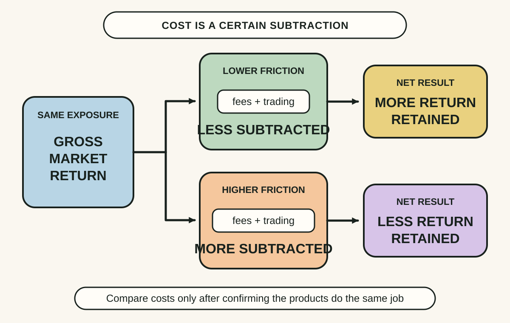
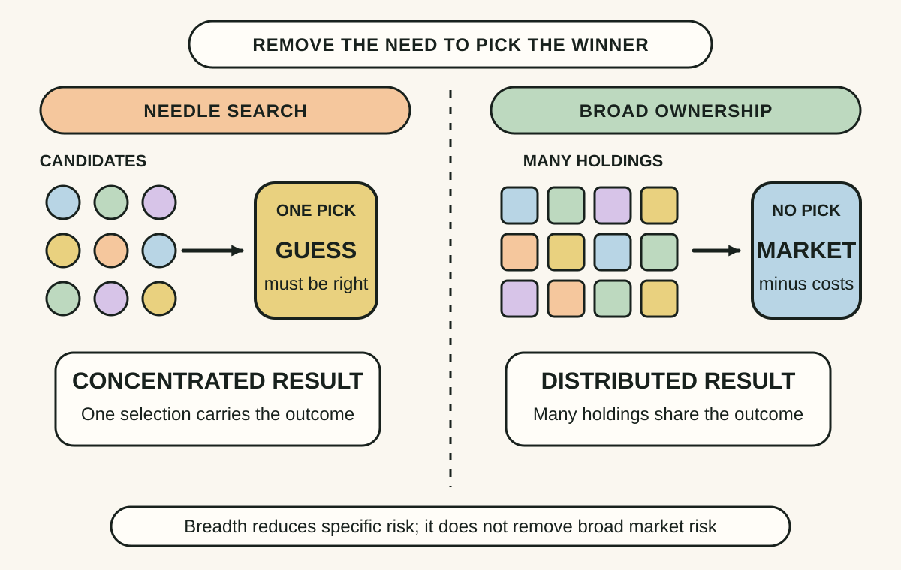
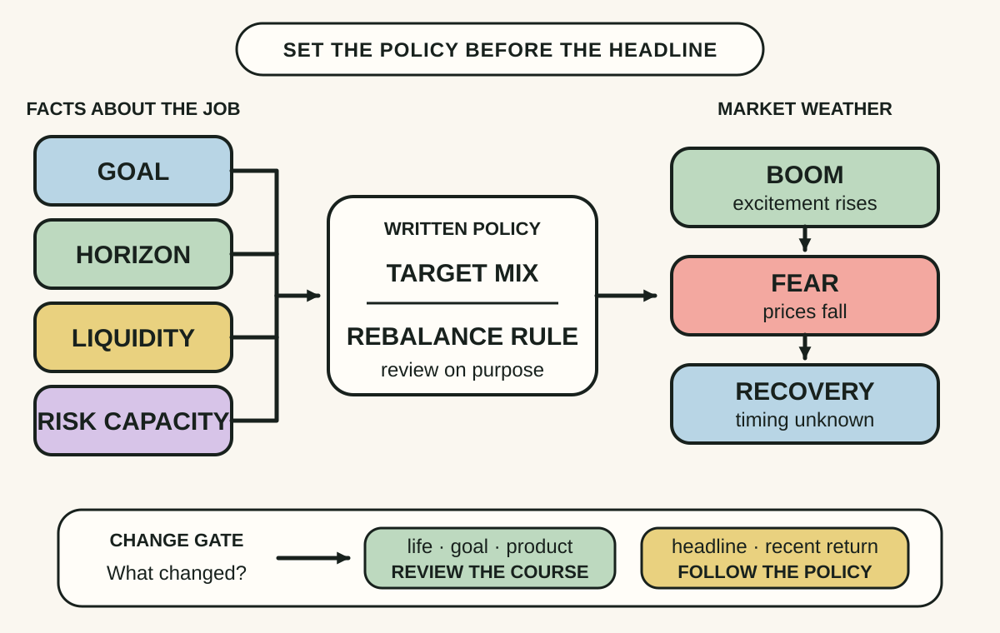

Daily lesson ·
The Little Book of Common Sense Investing
Keep more of the market's return by treating costs as certain subtraction, diversifying instead of trying to identify winners and using a risk-fit plan sturdy enough to survive bad markets.
Idea 1
Costs compound in reverse #
The idea
Bogle begins with what he calls the relentless arithmetic of investing. Investors as a group own the market, so before costs they collectively earn the market's gross return. After management fees, transaction costs and other frictions, the aggregate investor return must be lower by those costs. Skill may change who wins, but it cannot make the industry's total cost disappear.
A recurring fee is deducted not once but from a balance that could otherwise remain invested. The visible charge is therefore only part of the effect: the investor also gives up future returns on each amount removed. Bogle's practical conclusion is to compare the full cost of obtaining a chosen exposure and keep avoidable friction low.

Why it matters
Future returns are uncertain, but a disclosed fee is a known subtraction. Focusing on cost does not require forecasting which manager or market style will win, and small recurring differences can become material over a long horizon.
Apply it today
Choose one fund, ETF or super investment option you already hold or are considering; do not buy or sell anything for this exercise.
Find its PDS or official product page and record the management fees and costs, transaction costs and any brokerage or advice layer.
Compare those costs only with an option that performs a genuinely similar job and carries comparable risk.
Caveat or failure mode
The cheapest product is not automatically the best. Two funds can track different markets, take different risks, offer different liquidity or tax treatment and provide different services. A useful comparison starts with purpose and exposure, then asks which avoidable costs remain.
Idea 2
Buy the haystack, not the needle #
The idea
Bogle argues that identifying tomorrow's winning company or manager in advance is an unreliable basis for a whole plan. His alternative is broad ownership: hold a large cross-section of the productive market so the portfolio does not depend on finding the few exceptional winners before their success is reflected in prices.
The haystack metaphor is about removing avoidable selection risk, not promising safety. A broad index can spread exposure across many companies and industries at low cost, while an appropriate mix of asset classes can address a different layer of risk. The rules and holdings of the chosen index still determine what the investor actually owns.

Why it matters
A single company, sector or manager can fail for reasons the investor did not foresee. Breadth lowers the damage from being wrong about one selection and reduces the number of predictions the plan needs to survive.
Apply it today
List the funds and direct shares in one investment account.
Check each product's official holdings and note the largest companies, countries, sectors and asset classes.
Circle repeated exposures and write one question about whether the overlap is deliberate.
Caveat or failure mode
Diversification cannot prevent a broad market fall, and a fund is not diversified merely because it owns many securities. A narrow sector index, repeated top holdings, home-country concentration, currency exposure and poorly chosen asset allocation can leave substantial risk in place.
Idea 3
Build a plan that can stay the course #
The idea
Bogle's low-cost, broad-ownership strategy depends on discipline. Switching after a fall can lock in losses, while chasing recent winners can buy an exposure only after its price and popularity have risen. Because short-term market direction is unknowable, he urges investors to define a suitable allocation and remain invested through inevitable discomfort.
Staying the course is not refusing to think. The course must first fit the investor's goals, time horizon, need for liquidity and capacity for loss. A target mix and a rebalancing rule create a reasoned response to market movement before fear or excitement supplies a different one.

Why it matters
A theoretically efficient portfolio fails if its owner abandons it at the worst moment. Precommitted rules reduce the number of high-pressure decisions and make a market move an input to a policy, not an instruction to improvise.
Apply it today
Choose one long-term investment goal and write its time horizon and likely need for cash.
Write the current target mix and the rule, if any, for reviewing or rebalancing it.
Name one life change that would justify a review and one market headline that would not.
Caveat or failure mode
Staying the course can become harmful stubbornness when goals, income, health, dependants, liquidity needs, product terms or risk capacity change. Risk tolerance estimated in calm markets may also prove optimistic during a severe fall. A licensed adviser may help where the consequences or choices are complex.
Knowledge check · 6 questions
Learning check
Answer all 6, then check your answers. Your first result stays in this browser, and each explanation appears after you check. A 3-question review can appear on the homepage from tomorrow.
6 questions not yet answered.
Today's experiment · 10 minutes
Run a cost, breadth and fit audit
- Choose one fund, ETF or super investment option you already hold or are considering; this is an inspection, not a trade.
- Open its current PDS or official product page and record the index or mandate, major exposures, management fees and costs and any visible transaction layer.
- Write one sentence for each test: what does it cost, how broad is the underlying exposure and what goal and horizon is it meant to serve?
- Mark one fact you still need to verify before making any financial decision.
Observable result: You finish with a three-part evidence card for one real product and one clearly named uncertainty, without buying, selling or relying on recent performance.
Retrieval practice
Spaced recall
- From The Psychology of Money: how can room for error help a financial plan survive the person and circumstances using it?
- From Algorithms to Live By: how should a finite horizon change the balance between exploring alternatives and using a satisfactory choice?
- From Thinking in Systems: how can a small recurring outflow change a compounding stock over a long period?
Verification
Source notes
These links support the attributed claims and edition details; applications and extensions are labelled in the lesson.
- WorldCat: 10th Anniversary Edition, updated and revised, 2017
- John C. Bogle archive: The Relentless Rules of Humble Arithmetic and the Cost Matters Hypothesis
- John C. Bogle archive: costs, diversification, prudent allocation and staying the course
- Investor.gov: index fund costs, tracking differences and risks
- ASIC Moneysmart: choosing a managed fund using goals, risk, fees and current disclosures
- ASIC Moneysmart: Australian ETF diversification, costs, market risk and tracking error
One-sentence takeaway